This page provides an overview of the research and the database content, along with a user-friendly and intuitive guide to the features.
- Here you can view the detailed article summary and find citation information.
- Here, a brief statistical overview of the database's data is provided, with all charts
being
interactive.
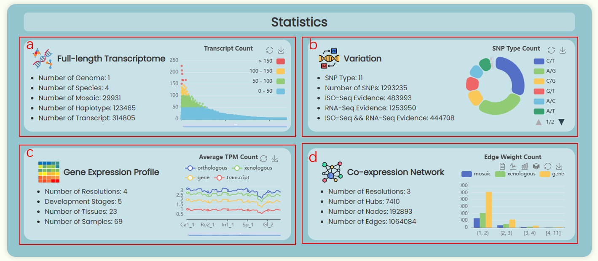Fig 1. The statistics section
- Full-length Transcriptome (Fig 1a): Describes the scale of the transcriptome database constructed in this study and enumerates the number of full-length transcripts corresponding to different chimeric genes.
- Variation (Fig 1b): Displays information on the number of SNPs in the transcriptome database and provides statistics on the proportions of different types of SNPs.
- Gene Expression Profile (Fig 1c): Details the sample types and quantities used in this study, and presents the average TPM values for each sample at four resolutions (orthologous/mosaic, xenologous, gene/haplotype, transcript).
- Co-expression Network (Fig 1d): Shows the network scale at three resolutions (mosaic, xenologous, gene/haplotype) and provides a count of edge weights in four ranges: (1, 2), [2, 3), [3, 4), and [4, 11).
- Here, the appearances of five database pages (Fig 2a. Full-length Transcriptome, Haplotype & SNP, Gene Expression Profile, Single Co-expression Network, Hub Co-expression Network) and three online tool pages (Blast, Annotation, Transcript Factors) are dynamically displayed. You can click on the corresponding buttons to access these pages and explore them further.
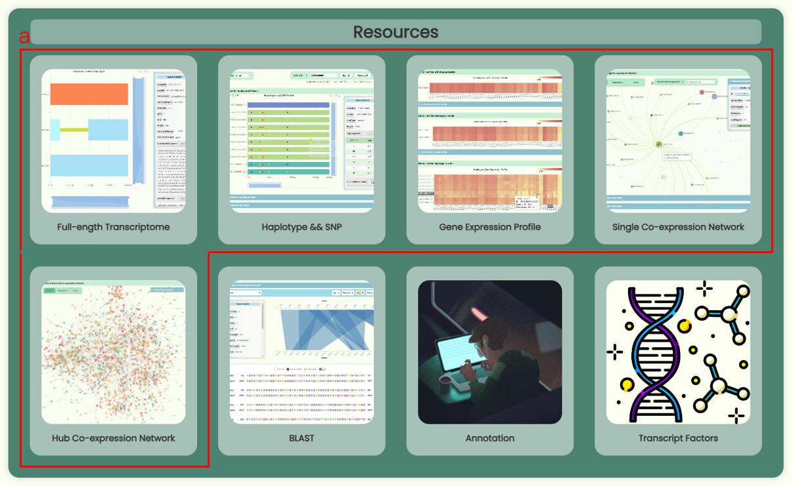
Fig 2. The resources section
- This section will showcase important updates on website development and data content.
- The navigation bar will remain fixed at the top of the screen on all pages and dynamically adjust its length according to the user's screen size (Fig 3a). When the screen is narrower, the options and search box will be hidden, and users will need to click the menu button to open the navigation menu (Fig 3b).
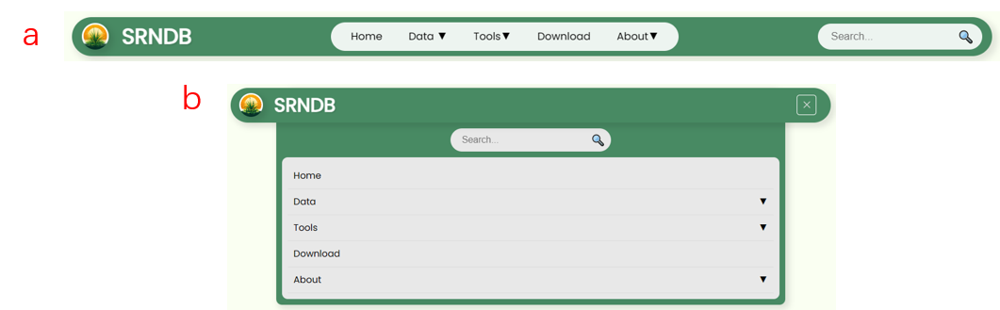
Fig 3. Responsive navigation bar
- Users can enter a database ID into the search box in the navigation bar to perform a global search (Fig 4a). This will generate a new navigation page directing users to the resource page associated with that ID (Fig 4c). If the ID is invalid for a particular resource page, the resource button will become non-clickable (Fig 4d). A new ID list has been created for the full-length transcriptome database developed for this research. Users can hover over the search box to download this list (Fig 4b), which also indicates the precision levels (orthologous/mosaic, xenologous, gene/haplotype, transcript) for different IDs.
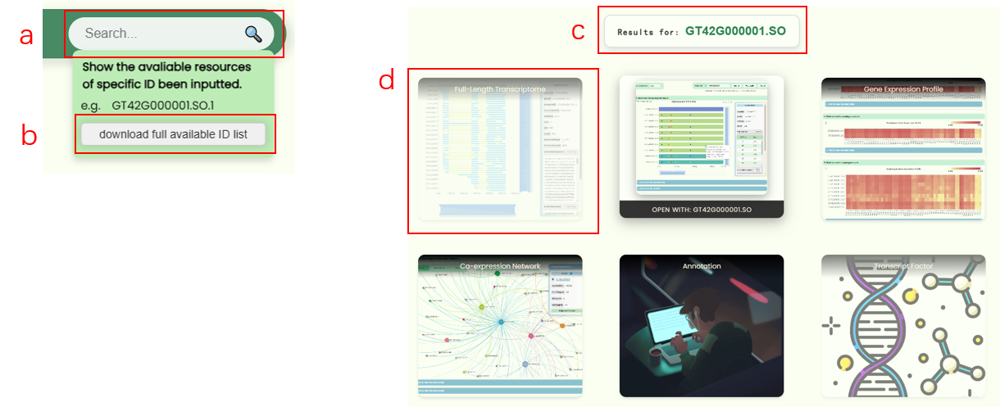
Fig 4. Global search box
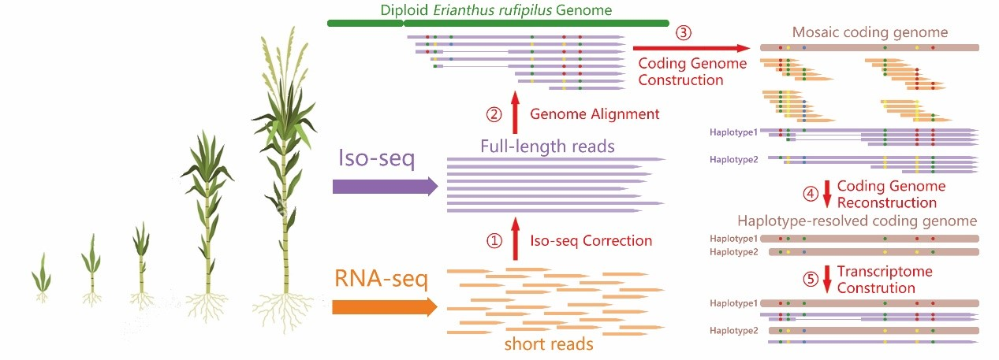
Fig 5. The workflow of dataset generation
- Our research data can be summarized with Fig 5. We conducted RNA-seq and Iso-seq sequencing on 23 tissues across five developmental stages of GT42 sugarcane. The RNA-seq results were used to correct the Full-Length Non Chimeric (FLNC) sequences. Using the haploid Erianthus rufipilus genome as a reference, we successfully assembled a high-quality mosaic gene dataset. Next, by performing SNP calling on the FLNC sequences, we clustered the RNA-seq and Iso-seq reads based on SNP loci. The clustered reads were then reassembled to obtain a haplotype-resolved gene dataset. Finally, the FLNC sequences were assigned to different haplotype genes, resulting in the Full-length Transcriptome dataset.
To provide a comprehensive view of the database data, we have created five data visualization pages with a clean and elegant UI. You can explore the database content through a range of interactive features.
- The "Haplotype Profile" bar chart displays all haplotype-resolution genes (referred to as haplotype genes) derived from a mosaic gene. The top blue bar represents the mosaic gene (Fig 6a), while all bars below it represent the haplotype genes extracted from this mosaic (Fig 6b). The bars are aligned at the start, but their positions do not indicate the actual spatial alignment of the haplotype genes with the mosaic gene. The length of each bar represents the length of the gene. There are five colors used for the bars: blue for the mosaic gene, cyan-green for haplotype genes highly homologous to S. officinarum, dark green for haplotype genes highly homologous to S. spontaneum, pink for highly conserved haplotype genes, and brown for haplotype genes with unknown homology.
- The "Transcripts Profile of Haplotype" bar chart represents all alternative splicing events for a mosaic gene or haplotype gene (Fig 6c). In the chart, exons of all transcripts are shown with light blue bars (Fig 6d), while introns are represented by narrower yellow bars (Fig 6e). The position of each transcript is aligned with the actual position of its corresponding gene. When a mosaic ID is searched in the “search ID” box, the chart will display all alternative splicing events for all haplotype genes associated with that mosaic ID. In this case, the chart will show all haplotype genes and their corresponding alternative splicing events, with the haplotype genes colored the same as in the "Haplotype Profile" bar chart.
- The page offers a range of interactive features. In the "search ID" input box, users can enter an ID to display its visualization results (Fig 7a). You can check the supported ID formats and types via the help button, or directly download the ID list to view IDs for the four resolution levels (orthologous/mosaic, xenologous, gene/haplotype, transcript). Additionally, you can browse the results sequentially for mosaic IDs by clicking the Previous and Next buttons, though this functionality is only available for mosaic IDs. Furthermore, the search box will recognize the ID entered by the user and highlight the corresponding bar in the bar chart. Both bar charts include a "Result Details" card on the right side (Fig 7b, c), which displays detailed information about the selected bar and updates in real-time as users click on different bars. Below the bar charts, a hidden section contains a table (haplotype table / transcript table) with all the information from the charts and provides a download option.
- You can hover over different elements in the image to view detailed information about each element (Fig 8a, b). Additionally, you can adjust the image range using the zoom tools located on the right and bottom of the image (Fig 8d). The functionality buttons in the top right corner allow for image area selection and image downloading. When you click on different bars in the "Haplotype Profile" bar chart, the alternative splicing types in "Transcripts Profile of Haplotype" bar chart, the "Result Details" card, and the information table will update in real-time. If the table contains many columns, you can use the horizontal scrollbar at the bottom of the table to view additional columns (Fig 8b).
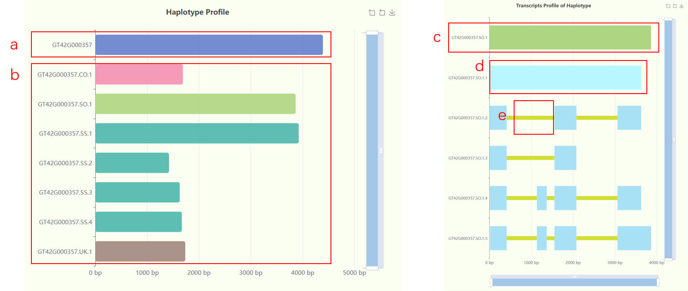
Fig 6. The haplotype and full-length transcript plot
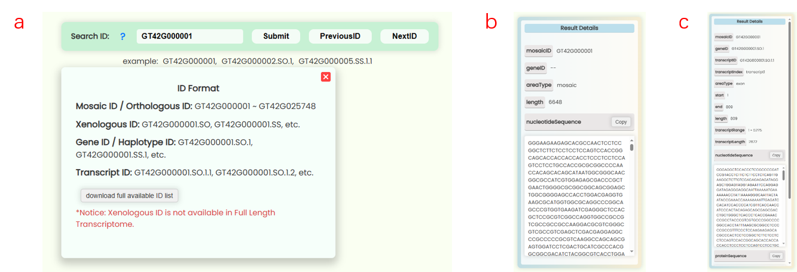
Fig 7. The ID search tool and result details card
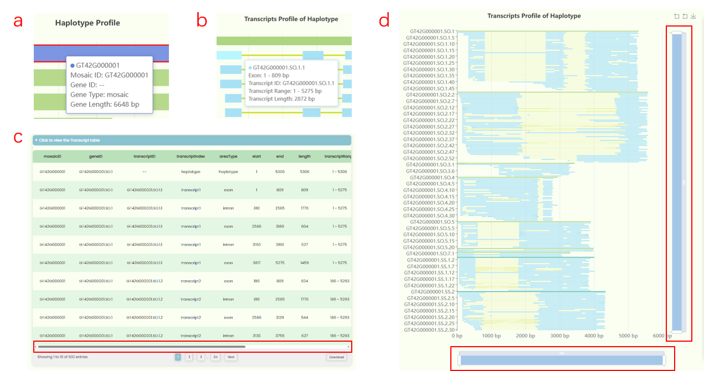
Fig 8. The interactive components
- The "Haplotype and SNP Profile" bar chart displays the SNP positions and types for each haplotype gene corresponding to a mosaic gene. The color scheme for the bars is consistent with the definitions in the Full-length Transcriptome page: blue for the mosaic gene, cyan-green for haplotype genes highly homologous to S. officinarum, dark green for haplotype genes highly homologous to S. spontaneum, pink for highly conserved haplotype genes, and brown for haplotype genes with unknown homology. SNP sites are shown in five colors: blue for A, red for C, yellow for G, green for T, and black for sites without exon reads evidence.
- We performed SNP calling on both ISO-Seq and RNA-Seq results and clustered reads that remapped to the mosaic gene based on SNP information. Reads within the same cluster were reassembled, allowing us to map SNP sites to each haplotype gene. Consequently, we can associate SNP sites on the mosaic gene with haplotype genes. However, the SNP position number correspond to the mosaic gene's location, not the haplotype gene's location. To represent the distribution of all SNP sites on a mosaic gene across its haplotype genes, we set the length of all haplotype gene bars to match the length of the mosaic gene. Therefore, each SNP marked on a haplotype gene indicates the type of SNP at that position in the mosaic gene. For example, SNP position 17 for GT42G000001 is of type A/C because the reads aligned to this mosaic gene at position 17 may show either A or C. Thus, through clustering and reassembly of these reads, we can determine whether the SNP at position 17 for each haplotype gene is A or C.
- In the "Haplotype and SNP Profile" bar chart, you can hover over image elements to view detailed information about specific mosaic genes, haplotype genes, and SNPs (Fig 9a-c). You can adjust the image range using the zoom tools on the right and bottom of the image and use the functionality buttons in the top right corner to select image areas and download the image (Fig 9d). The results detail card on the right side updates when you click on image elements. Note that when you click on a mosaic gene bar, the green "haplotype SNP" table in the "Result Details" will display all SNP sites and types on that mosaic gene (Fig 9e). When you click on a haplotype gene bar, the table will show the specific SNP types for that haplotype gene (Fig 9f). Clicking on an SNP site will display the number of ISO-Seq and RNA-Seq read evidences for that SNP (Fig 9g), and the green table will show the specific type of that SNP site for each haplotype gene (Fig 9h).
- The "SNP with xxx Evidence" bar chart displays the ISO-Seq and RNA-Seq read evidence statistics for all SNP sites on each mosaic gene. The top subplot shows SNP sites supported by both ISO-Seq and RNA-Seq reads. The middle subplot represents SNP sites supported only by ISO-Seq reads, while the bottom subplot displays SNP sites supported only by RNA-Seq reads. You can hover over specific positions to view the SNP types associated with those sites. The three subplots are designed to be synchronized, allowing you to control the zoom and pan of all three subplots simultaneously by interacting with one of them.
- Detailed data corresponding to both bar charts can be viewed and downloaded in the hidden section below the image. If the table's width is extensive, you can use the horizontal scrollbar at the bottom of the table to view additional columns.
- The "search ID" box on this page only supports searching with mosaic IDs. However, you still can enter other types of IDs, but they will be converted to mosaic IDs for the search.
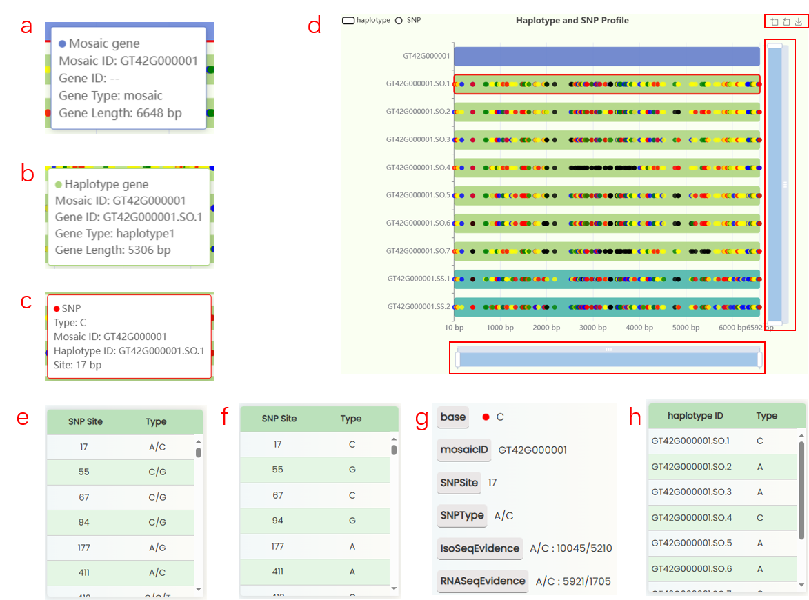
Fig 9. The interactive components and SNP table
- The "development stages" sunburst chart illustrates all sample information from the study (Fig 10). We collected 23 tissues from GT42 sugarcane at five developmental stages , with each tissue sequenced in triplicate. The samples in the sunburst chart are arranged in a clockwise order according to developmental stages and are color-coded by stage. The innermost ring represents developmental stages, the middle ring represents tissue numbers, and the outermost ring represents specific sample numbers. You can hover over or click on specific segments to view the hierarchical structure of specific developmental stages.
- The "ID Tree" dendrogram illustrates the hierarchical structure of IDs across four levels of resolution (Fig 11). From left to right, the levels are represents for mosaic/orthologous ID, xenologous ID, haplotype/gene ID, and transcript ID. Since a mosaic gene may contain a large number of transcripts, transcript IDs are collapsed by default. However, you can click on each ID to expand or collapse the nodes as needed.
- The page features four heatmap areas representing TPM levels at four different resolutions (Fig 12). The x-axis denotes tissue numbers (corresponding to the outermost ring in the "development stages" sunburst chart), while the y-axis denotes IDs (matching the hierarchical structure in the "ID Tree" dendrogram). You can hover over specific heatmap points to see detailed expression data for the sample. Each heatmap has a horizontal color bar in the top-right corner for adjusting the color range of the heatmap data, and you can also use it to view data information by hovering over specific values. Additionally, a color bar tool is available for changing the overall heatmap color scheme by selecting different color blocks. Detailed data can also be viewed and downloaded in tabular format from the hidden section below each heatmap image.
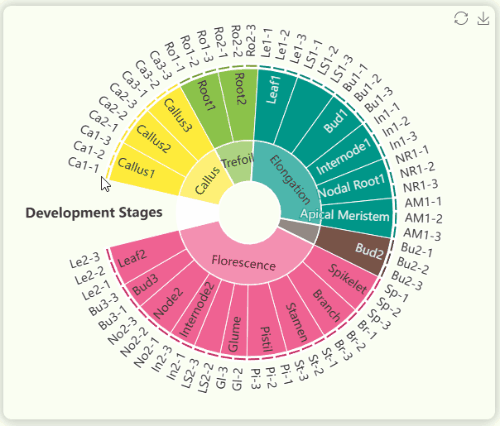
Fig 10. The interactive development stage plot

Fig 11. The interactive ID tree plot
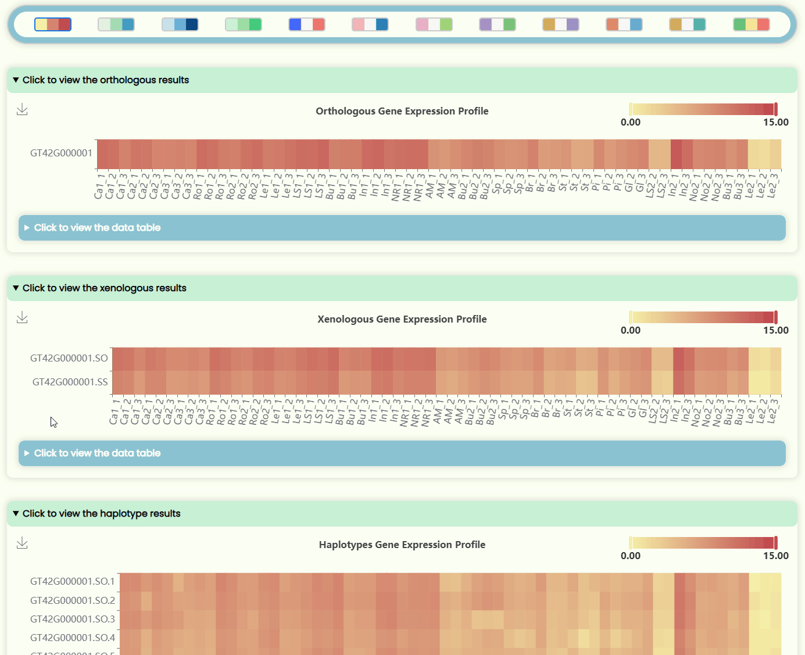
Fig 12. The interactive heatmap section
- The "Single Co-expression Network" is a single-core network that primarily displays all adjacent nodes and edges connected to a central node. If there are additional edges connecting between the adjacent nodes, those connections are also displayed within the single-core network. Thus, the number of network layers follows the formula: 1 ≤ number of layers < 2. The node colors in the graph are used only to distinguish between different nodes, while the edges share the same color as their source node. The node size is calculated using the formula: Symbol Size = math.log( in_degree + out_degree + 1 ), where log refers to the natural logarithm. The width of the edges represents the weight of the connection, and all the edges shown in the single-core network having a threshold of weight ≥ 1.
- You can zoom the image area using your mouse scroll wheel, and you can freely drag within the image to roaming (Fig 13). To help you explore the adjacent nodes and edges of a specific node, you can hover over a particular node or edge to view its properties. When hovering over a node, all adjacent nodes and edges connected to it in the current network will be highlighted. Similarly, hovering over an edge will highlight its source and target nodes. Additionally, you can click on a node or edge to display detailed information in the result details card. If you wish to view detailed information about all nodes and edges in the current network, you can find or download a complete table from the hidden section below the image.
- We have assigned hyperlink attributes to all node IDs displayed in the results detail card (Fig 14). You can directly click on any ID, which will then render the core network corresponding to the clicked ID. This allows you to explore and navigate through the entire co-expression network using the single-core network view, effectively enabling seamless transitions between different nodes.
- You can switch the resolution of the current network using the resolution selection bar located at the top left of the image. We currently offer three network resolution levels: mosaic/orthologous, xenologous, and gene/haplotype (Fig 15). After switching, the core network of the first homologous ID under the selected resolution will be displayed by default. If there are multiple homologous IDs for the selected resolution, such as xenologous ID and gene/haplotype ID, you can choose and switch between them using the "Select Homologous ID" dropdown menu to render the core network for that specific ID. Please note that the total degree of a core network may affect the rendering time and display smoothness, but once the network iteration is complete, it will return to normal smoothness.
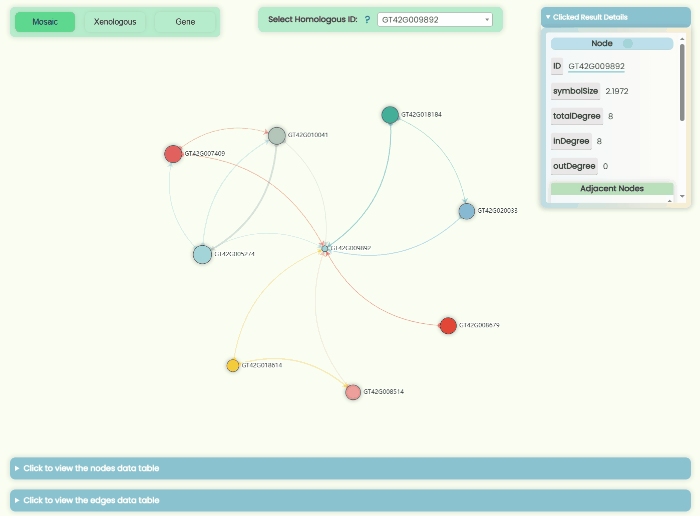
Fig 13. The interactive core network

Fig 14. The infinite exploration feature
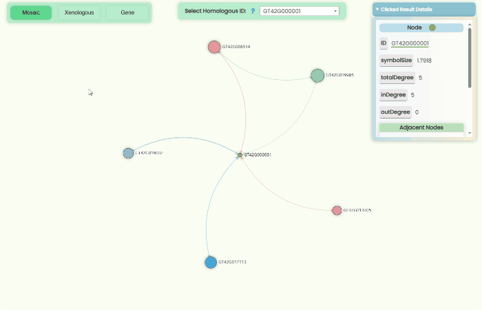
Fig 15. The resolution switching tools
- To illustrate the overall regulatory situation of the nodes, we have filtered out hub nodes under three resolution levels from the original data for display. The selection criteria for hub nodes are as follows: Mosaic: symbol size ≥ 2.5, weight ≥ 2; Xenologous: symbol size ≥ 2.5, weight ≥ 2; Gene: symbol size ≥ 4.2, weight ≥ 2. The final number of nodes and edges obtained from each resolution level is: Mosaic: nodes = 1,474, edges = 44,925; Xenologous: nodes = 2,475, edges = 67,990; Gene: nodes = 3,461, edges = 150,127.
- In the hub network, the size of each node is calculated using the formula: Symbol Size = math.log( in_degree + out_degree + 1 ), where log refers to the natural logarithm. Since the hub network contains a large number of edges with higher weights, to enhance image clarity and improve interactive response speed, we no longer use edge width to represent its weight. Additionally, the focus effect when hovering with the mouse is now limited to the currently selected node and its connected edges.
- Since the hub network only displays hub nodes, when you click on a node, the result details card will not show all of its adjacent nodes from the original network. However, you can still click on the ID in the result details card to navigate to the Single Co-expression Network page (Fig 16), where you can visualize all adjacent nodes and edges of the hub node. Alternatively, you can directly view or download the information table from the hidden section below the image, which contains the original records of all nodes and edges under the current precision level (edge weight ≥ 1).
- Please note that due to the large number of nodes and edges in the hub network, there may be some lag when the network graph is initially loaded. However, we have implemented caching optimizations to ensure that each of the three resolution networks will only be loaded once during the current session. After the network iteration is complete, if your computer has sufficient memory, your browser will be allocated enough resources, allowing the webpage to run smoothly without significant impact on performance.

Fig 16. Link from hub network to single network
- This research has ultimately created four sequence datasets: nucleotide sequences dataset of mosaic genes, haplotype genes, full-length transcripts, and protein sequences dataset of full-length transcripts. To enable users to better explore these datasets, we have developed a powerful and user-friendly BLAST front-end visualization platform. The back-end of this platform is based on NCBI’s BLAST 2.16.0+ localized tool, and we have pre-integrated these four datasets into the front-end search interface. Compared to most complex BLAST tools, we have significantly simplified the traditional BLAST functionalities and created a range of user-friendly interactive features with a clean and streamlined UI.
- Search steps:
- Step 1: You can either copy and paste some query sequences in FASTA format into the input box or drag and drop a file containing the query sequence into the input box for automatic filling. Additionally, you could also just click the "example" button to automatically retrieve two nucleotide or protein query sequences (Fig 17).
- Step 2: Once the query sequence is detected to be valid, the checkboxes of "database" will automatically become active (Fig 18). You will need to select one or more database types for the search. You can only choose either nucleotide or protein databases at the same time, but you can select multiple databases of the same type at one time, which allows for more comprehensive BLAST results.
- Step 3: Once you have completed entering the query sequence and selecting the database, the system will automatically determine which types of BLAST functions are available based on your query sequence type and database combination, and then enabling the corresponding buttons (Fig 18). Additionally, you can hover over each BLAST function button to view a brief description of its algorithm in advance.
- Step 4: If the user input is valid and the backend software runs successfully, the server will process your task and return the results. After the results are loaded, a BLAST result box will appear below the submission form. If you submitted multiple query sequences, there will be multiple result sets, but the BLAST result box will only display the visualization for one query at a time. To view the visualization for other query sequences, you can switch the query ID using the "Select Result for" dropdown menu (Fig 19a). You can also directly download the result files for the current query in three formats from the "Download" dropdown on the right (Fig 19b), which includes: Pairwise Alignment: The most common BLAST result, showing alignment score and pairwise comparison in text format. Detailed Value Table: A detailed table with comments displaying alignment score data. Comprehensive JSON: Contains detailed search parameters and result data, suitable for custom analysis.
 Fig 17. Filling query box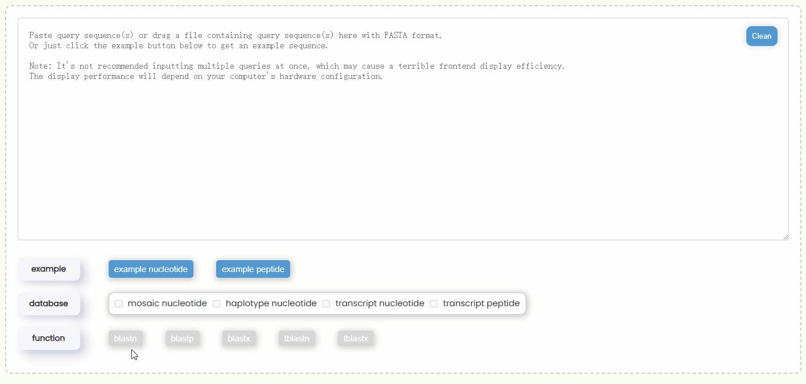Fig 18. Selecting database and BLAST function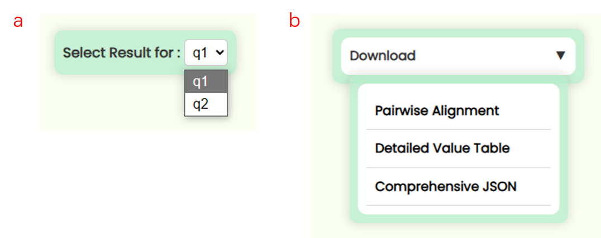Fig 19. Switching results between query and download result files
Fig 17. Filling query box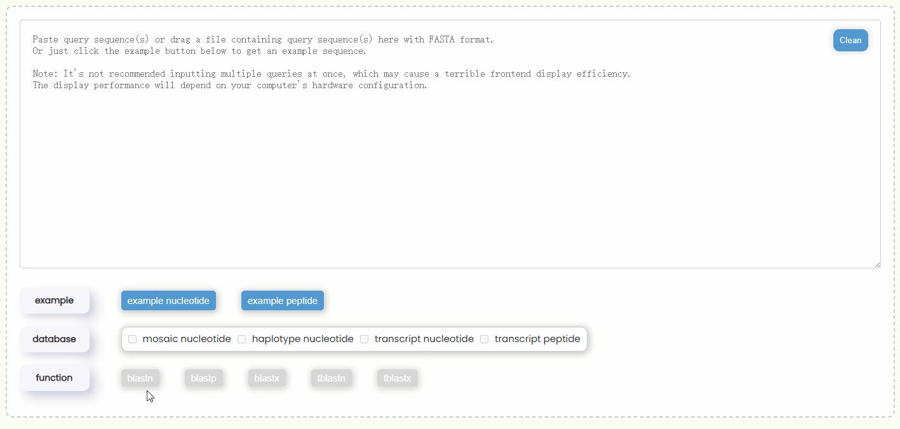Fig 18. Selecting database and BLAST function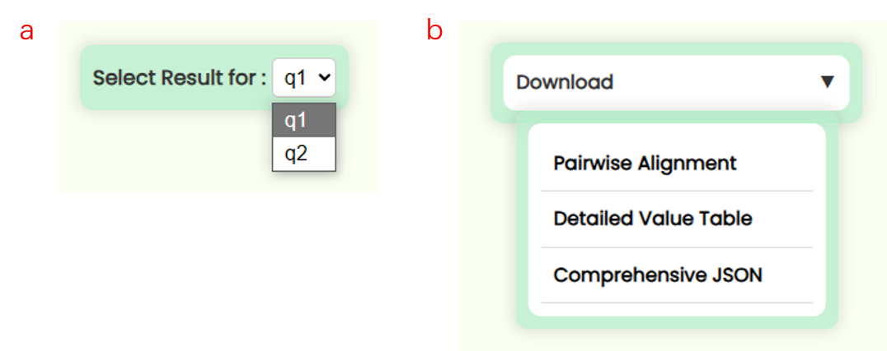Fig 19. Switching results between query and download result files - All Hits Bar Plot:
- This chart visualizes the results of Detailed Value Table, showing all matching intervals. The x-axis represents the length of the query sequence, and the y-axis represents the subject/target sequence ID. Since all HSPs (High-scoring Segment Pairs / High Scoring Pairs) within a single Hit share the same subject ID, only the first HSP's ID is displayed for each Hit (Fig 20a).
- Each bar in the chart indicates a matching region between a section of the query sequence and a corresponding section of the subject sequence with the specific ID on the y-axis. The direction of the bar indicates the alignment direction of the query sequence. You can hover over a bar to view detailed matching descriptions or use your mouse scroll wheel or the zoom tool on the right side of the image to zoom in or out (Fig 20b, c).
- In the result information, frames refer to ORFs (Open Reading Frames). Since blastn and blastp do not involve ORF translation, so the number 1 represents a sequence starting from the beginning. For nucleotide sequences, both strands (positive:1 and negative:-1) must be considered, whereas protein sequences do not have this concept. In blastx, tblastx, and tblastn, the sequence is translated into six reading frames. However, protein sequences do not have the concept of reading frames, so in BLAST functions with ORF translation, protein sequences use 0 to represent a protein sequence starting from the beginning, while nucleotide sequences use ±1, ±2, and ±3 to represent different ORF start points and alignment directions.
- You can click on a specific bar to jump to the detailed pairwise sequence alignment visualization result section.
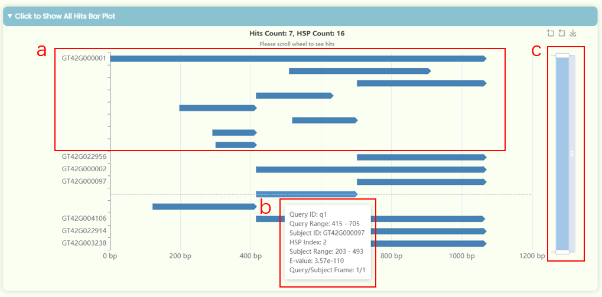Fig 20. All Hits Bar Plot - All Hits Table: This table displays the data from the Detailed Value Table. To make the table more concise, we have abbreviated the column headers. You can hover over a specific header or table data item to view the full title. Additionally, all Subject IDs in the table are hyperlinked, allowing you to click on them to open the global search page, which will display resource page redirect links related to that specific ID (Fig 21).
- All Hits Alignment Details:
- This area displays the pairwise alignment visualization results for all Hits. Each Hit is presented in a result section consisting of four distinct panels.
- Result file download: In the "Download" dropdown of each result section (Fig 22a), you can download six types of results: Area Picture: Download the SVG image of the current sequence region alignment. Alignment Sequence Picture: Download the HTML text result of the current HSP sequence alignment result. Complete Subject Sequence: Download the complete nucleotide or protein sequence of the subject/target subject. Aligned Subject Sequence: Download the nucleotide or protein sequences of the subject/target corresponding to all HSP regions for the current Hit, with HSP numbers indicated in the file. Pairwise Alignment Result: Download the pairwise sequence alignment text results for all HSP regions in the current Hit. Detailed Value Table: Download the numerical result table for all HSPs of the current subject/target sequence.
- Jumping buttons: You can use the four navigation buttons on the right to jump between results within the All Hits Alignment Details section (Fig 22b): Top: Return to the All Hits Bar Plot. Previous: Go to the previous hit result. Next: Go to the next hit result. Bottom: Jump to the last hit result. To improve webpage performance, the All Hits Alignment Details result section uses lazy loading technology. Only 10 hit result panels will be loaded at a time. When you scroll to the bottom or click the "bottom" button, the next or all batch of result panels will be loaded. However, if the number of hits exceeds 100, loading all batch result panels at once can significantly affect the page's interactivity.
- Result Details Card: This card displays the detailed numerical results of the selected HSP within a Hit. You can click the "Previous" and "Next" buttons in the HSP Index section to switch between HSP regions (Fig 22c). The HSP focus area in the matching region chart of left and the sequence alignment text result below will also update in real-time.
- Matching Region Chart: This chart shows the alignment between the subject sequence and the query sequence. All HSPs that are visualized on this chart—forward matches are shown as quadrilateral regions, while reverse matches are displayed as funnel-shaped regions. You can zoom in and out of x-axises by scrolling the mouse wheel on the top or bottom half area of the plot area, and you can also move the x-axises by dragging them left or right (Fig 23). When you click on a specific HSP, it will be highlighted, and the results detail card on the left, as well as the sequence alignment text below, will update in real-time. However, if a Hit contains many HSP regions, it may be more convenient to use the "Previous" and "Next" buttons in the HSP Index section of the result details card to switch between HSPs.
- Sequence Alignment Text Result: We've added vibrant color effects to the otherwise monotonous nucleotide/peptide alignment results (Fig 22d). The numbers at both ends of the sequence represent the position of the first and last base between this region. The sequence numbering starts at 1, and since gaps are not counted in the total sequence length, the difference between the numbers of the first and last base might be smaller than the actual number of elements displayed.
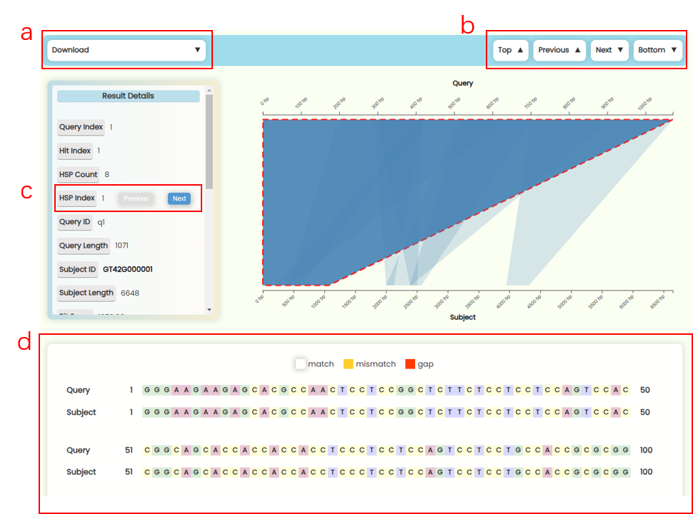Fig 22. Pairwise alignment visualization section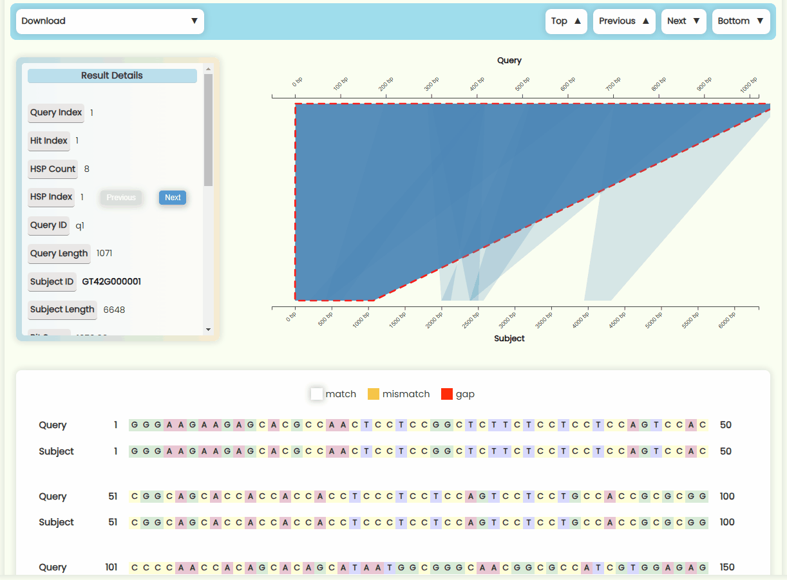Fig 23. Matching region chart

Fig 21. All Hits Table
- We provide all the original sequence data and downstream analysis data generated from this study. You can view detailed descriptions of these files by clicking the help button on each download card. Both single and multiple file downloads are supported.
- The tutorial page you're currently viewing.
- This section lists the contributors and supervisors of the project, along with their contact information and addresses. You can also find the source code for the project website here, and we welcome any feedback or suggestions for improvements to the site.
- Why is the website layout wider than usual? How can I adjust the browser's width settings?
-
Our website features rich visual elements designed to provide the best experience on screens
with a normal desktop
width. While the site is accessible on mobile devices, the browsing performance on mobile may
not deliver the optimal
visual experience. Therefore, we recommend using a computer display with a width greater than
1400px for the best
results visualization.
If the website appears too wide in your browser, you can adjust the browser's zoom settings to
resize the layout:
- For Windows: Use "Ctrl" + "+" to zoom in or "Ctrl" + "-" to zoom out. You can also use "Ctrl" + mouse wheel up/down.
- For MacOS: Use "Command (⌘)" + "+" to zoom in or "Command (⌘)" + "-" to zoom out. Alternatively, use "Command (⌘)" + mouse wheel up/down .
Fig 1. This is the title and description of the image